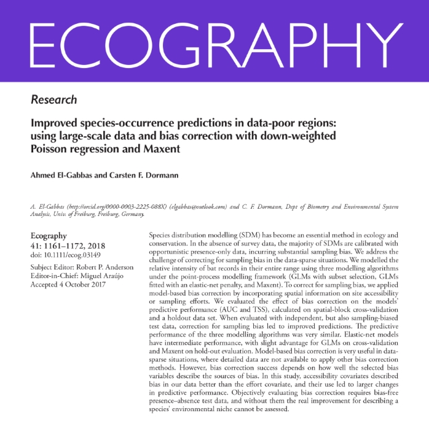

Ahmed El-Gabbas; Carsten F. Dormann (2018). Improved species-occurrence predictions in data-poor regions: using large-scale data and bias correction with down-weighted Poisson regression and Maxent. Ecography 41(7): 1161-1172.
Abstract:
Species distribution modelling (SDM) has become an essential method in ecology and conservation. In the absence of survey data, the majority of SDMs are calibrated with opportunistic presence-only data, incurring substantial sampling bias. We address
the challenge of correcting for sampling bias in the data-sparse situations of developing countries. We modelled the relative intensity of bat records in their entire range using three modelling algorithms under the point-process modelling
framework (GLMs with subset selection, GLMs fitted with an elastic net penalty, and Maxent). To correct for sampling bias, we applied model-based bias correction by incorporating spatial information on site accessibility or sampling efforts.
We evaluated the effect of bias correction on the models' predictive performance (AUC and TSS), calculated on spatial-block cross-validation and a holdout data set. When evaluated with independent, but also sampling-biased test data, correction
for sampling bias led to improved predictions. The predictive performance of the three modelling algorithms was very similar. Elastic-net models have intermediate performance, with slight advantage for GLMs on cross-validation and Maxent on
hold-out evaluation. Model-based bias correction is very useful in data-sparse situations, where detailed data are not available to apply other bias correction methods. However, bias correction success depends on how well the selected bias
variables describe the sources of bias. In this study, accessibility covariates described bias in our data better than effort covariates, and their use led to larger changes in predictive performance. Objectively evaluating bias correction
requires bias-free presence-absence test data, and without them the real improvement for describing a species' environmental niche cannot be assessed.
|

|
Download PDF

|
El-Gabbas A. & Dormann C. F.: Improved species-occurrence predictions in data-poor regions: using large-scale data and bias correction with down-weighted Poisson regression and Maxent. Ecography DOI: 10.1111/ecog.03149. Appendix 1: Supplementary figures
and tables Table A1: The estimated optimum combination of Maxent’s feature classes (FC) and Regularization Multiplier (RM) for each species and bias model type. Combinations with highest mean testing-AUC on 5-folds spatial-block cross-validation
were selected. All the analyses were performed using modified code from the ENMeval package in R (Muscarella et al., 2014). See main text for more information. Species Environment-only Accessibility Effort a Feature classes (FC): L linear; Q quadratic;
H hinge; P product; and T threshold. For more details see Elith et al. 2011. b RM is a global multiplier to all individual regularization values; for more details see the main text and Muscarella et al. (2014). Table A2: Estimated best values
to run the elastic-net models (DWPR approach) for different species and bias models. For details, see main text. Species Environment-only Accessibility Efforts LASSO RIDGE Fig. A1: Map of all non-marine GBIF-records. There are clear signs of sampling
bias inherited in the GBIF database, disallowing the direct use of these records to run SDMs, unless action is taken to correct for sampling bias. GBIF-records are biased mainly towards Western Europe, with sparse locations across Africa, Asia,
and Eastern Europe. Areas shown in white represent pixels without any records (the majority of North and central Africa, Arabia, and eastern Europe). Clearly errorneous records were excluded before plotting this map.Fig. A2: Left: Map of all GBIF
bat records (accessed date: April 2015) per a grid of 20 × 20 km2.Right: All records available of the study species, collected either from the literature (blue points) or GBIF (red points). Both maps show large collection gaps. Fig. A3: Per-species
study area: An example of how the ‘per-species’ study area was determined (here for Asellia tridens). The dashed red line indicates the species extent of occurrence (minimum convex polygon); the solid red line shows the buffer used (1000 km),
and the dashed green line indicates the study area used. Fig. A4: Variables selection: Pearson correlation coefficient between each pair of the final covariates; see Appendix 3 for more information. Fig A5: Per-species number of backgrounds: Objectively
determining the adequate number of background ‘quadrature’ points to be used in GLM and elastic-net models (see main text and Renner et al., 2015). DWPR-GLM models (for each species, here: Asellia tridens) were repeated 25 times (each time, with
a different random sample from the background) with progressively increase the number of background points (from 5000 to 500,000); and for each model, the log-likelihood value is calculated and plotted. The number of backgrounds at which the likelihood
converges (i.e. no much benefit of using a higher number of backgrounds) is, visually, selected to run the final models. Here, no much improvement in the log-likelihood beyond 300,000 background points (out of 557,800 total available background
points) and so we used it for this species. Fig. A6: Determining the best value to run the elastic-net model for Nycticeinops schlieffeni (effort model). Eleven values ranging from zero (ridge) to one (lasso), with an increment of 0.1, were used
to run 11 models on cross-validation. For each value of , glmnet ran many models on a range of -values (estimated from the data; x-axis) and measure the mean cross-validation error (cvm) (here: Poisson deviance; y-axis). The value with the lowest
cvm is used further while predicting (vertical dotted lines, with colours correspond to the value used). Here, an value of 0.6 is shown to have the lowest cvm and so used further. For more details, see Table A2 and the main text. Fig. A7: Kendall’s
correlation between (per-species and modelling algorithm) mean AUC evaluated on spatial-block cross-validation and independent evaluation in Egypt. Each point represents the mean of 100 AUC values, with different symbols for each species. Colours
represent different modelling algorithm used. ‘M’ indicates the overall mean for each modelling algorithm. Panel (a) shows the correlation for the environment-only models (no bias correction). Panels (b-c) represent the accessibility model, without
and with correcting for sampling bias, respectively. Panels (d-e) represent the effort model, without and with correcting for sampling bias, respectively. Kendall’s correlation coefficients (and their p-values) are reported in each block. Grey
solid line represents the equality line. AUC performed on cross-validation were, on average, higher than AUC in Egypt. However, there is moderate correlation between bias-free evaluations on either scale. Fig. A8: Equivalent results to Fig. A7,
for TSS evaluation. Fig A9: Boxplots of the raw cross-validation evaluation (100 values) without (modelling evaluation; a and c) and with (bias-free evaluation; b and d) correction for sampling bias; either using AUC (a - b) or TSS (c - d); see
Appendix 6 for more information. Horizontal panels show results for different modelling algorithm, while the vertical panels show different bias models. Panels a & c show results for the environment-only model (without any bias manipulation) and
bias-accounting models (accessibility and effort models) without correcting for sampling bias. However, panels b & d compare results for the environment-only model and bias-accounting models (accessibility and effort models) after correcting for
sampling bias (see main text; for effort models, plots show evaluations either conditioning the predictions on a value of zero or the maximum relative sampling effort of training presences). Species are in ascending order according to their number
of occupied pixels at cross-validation scale (with numbers represent the species; see Table 1 for full species names). Fig. A10: Similar to Fig. A9, but showing results of independent evaluation in Egypt. Evaluation metrics are calculated in Egypt
using mean predictions (of 5-folds cross-validation) in Egypt along with entirely independent species records from Egypt (not used to run any of the models). Species are in ascending order according to their number of occupied pixels in Egypt
(with numbers represent the species; see Table 1 for full species names). Fig. A11: Species mean TSS calculated either on cross-validation (a - b) or in Egypt (c - d), either without (modelling evaluation; a & c) or with (bias-free evaluation;
b & d) sampling bias correction (for details, see Appendix 6). Each species is represented by different symbols (similar to those shown in Fig. A7; numbers represent species used, see Table 1). Red lines indicate the overall mean TSS at each modelling
algorithm and bias models applied. Fig. A12: Kendall’s correlation of the per-species mean TSS between different pairs of modelling algorithms (same as Fig. 2 in the main text, but for TSS). Each species is represented by different symbol (similar
to those of Fig. A7) with different colours for different bias models applied (using predictions of environment-only model and bias-free prediction of accessibility and effort model). ‘M’ indicates the overall mean evaluation. First row represents
mean spatial-block cross-validation evaluation, while the second is for independent evaluations in Egypt. Fig. A13: Values of bias variables at presences and available locations (backgrounds), at the per-species study area (A) or at local scale
‘Egypt’ (B). Rows correspond to different species, with numbers indicates the species (see Table 1), and columns represent bias variables of the accessibility model (distances to roads, cities, and protected areas) and effort model (relative bats’
sampling intensity). For each species, values at presence locations are indicated with black, and values at pixels unoccupied by the species are shown in grey. Most of the species are recorded from closer to roads and cities (and to some extent,
the protected areas), and unexpectedly at low to moderate sampling efforts. Fig. A14: AUC scores calculated the default way (using all available testing backgrounds – y-axis) versus using a fixed ratio between testing presences and backgrounds
(test-data prevalence = 1:20 – x-axis). (A) shows the raw outputs of 5-folds cross-validation. (B) shows the per-species mean AUC on cross-validation. Different colours represent the three bias models applied (environment-only, accessibility,
and efforts). Fig. A15: The predicted distribution of Otonycteris hemprichii (mean of 5-folds cross-validation), using different modelling algorithms (rows) and bias models (columns). Maps were scaled between zero and one, as different modelling
algorithms do not have the same scale, with blue colour indicates higher predicted relative intensity. (A) shows cropped predicted distribution of Otonycteris hemprichii (the same as Fig. 5) to Egypt. Grey points (in the top left panel) represents
available records used for indepenent evaluation presences in Egypt. In Fig. 5 of the main text, extreme values (> 0.9995 quantile of predicted values) were replaced with their next smaller value to improve map visualization, as GLM and elastic-net
models sometimes yielded extreme values. Maps in (B) are equivalent to maps in Fig. 5, without any extreme values manipulation (using the linear scale), demonstrating the difficulty of visualizing the predicted patterns in the existence of extreme
values; see main text for more details. Fig. A16: The reported and predicted distribution of Rhinolophus mehelyi (Maxent). The 2nd to the 4th panels show predictions from environment-only model and bias-free prediction of accessibility and effort
models, respectively. Arrows represent regions which gain higher predicted values after correcting for sampling bias (such as central Turkey or the Algerian Atlas). Predictions at these areas are of higher uncertainty (lower congurrence) and field
validation is probably required to confirm the species existence. The lighter the colour, the more suitable the location. Appendix 3: Variables selection List of initial covariates investigated for correlation/multi-collinearity and transformation
applied. Final list used to run the model is marked in grey. Variable Transfo- rmation VIF 10 | cor | 0.7 GVIF 3 Alt a Altitude yes yes yes Bio1 Annual mean temperature ^2 Bio2 Mean diurnal range (mean of monthly (max temp - min temp)) yes yes
yes Bio3 Isothermality (Bio2/Bio7) (* 100) Bio4 Temperature seasonality (standard deviation *100) yes yes yes Bio5 Maximum temperature of warmest month Bio6 Minimum temperature of coldest month Bio7 Temperature annual range (Bio5-Bio6) Bio8 Mean
temperature of wettest quarter ^2 yes yes yes Bio9 Mean temperature of driest quarter ^2 yes yes yes Bio10 Mean temperature of warmest quarter ^2 Bio11 Mean temperature of coldest quarter yes yes Bio12 Annual precipitation sqrt Bio13 Precipitation
of wettest month yes Bio14 Precipitation of driest month yes yes yes Bio15 Precipitation seasonality (coefficient of variation) yes yes yes Bio16 Precipitation of wettest quarter sqrt Bio17 Precipitation of driest quarter Bio18 Precipitation of
warmest quarter yes yes Bio19 Precipitation of coldest quarter log yes yes yes PET b Potential evapotranspiration AI b Aridity index sqrt AET c Actual evapotranspiration sqrt SWB c Soil-water balance sqrt NDVI_Max d Maximum NDVI (Normalized Difference
Vegetation Index) NDVI_Min d Minimum NDVI yes yes yes NDVI_Mean d Mean NDVI NDVI_Range d Range NDVI (maximum – minimum) NDVI_SD d Standard deviation of NDVI yes yes yes EVI_Max d Maximum EVI (Enhanced Vegetation Index) EVI_Min d Minimum EVI yes
EVI_Mean d Mean EVI yes EVI_Range d Range EVI (maximum - minimum) yes EVI_SD d Standard deviation of EVI a WorldClim : WorldClim provides a global dataset for the elevation and 19 bio-climatic variables interpolated from global monthly temperature
and precipitation recordings from weather stations (Hijmans et al. 2005). Tiles for the overall study area were downloaded at 30 arc-seconds resolution (~1 km near the equator; using the raster R_package), then projected to Mollweide equal-area
projection at 5 × 5 km2 resolution. The high resolution of 30 arc-seconds was preferred over the 2.5 arc minutes (~5 km near the equator) in order not to lose much information while re-projecting. Instead of interpolation (assigning a value for
the new pixel equals to the mean of the nearest three points at the original projection), a different approach was employed. First, a template grid covering the study area at the equal-area projection (5 × 5 km2) was prepared. Then, pixels of
the original variables (at 30 arc-seconds resolution) were converted into centroid points (at the original projection: WGS-1984), then projected into Mollweide projection, then these points were rasterized using the mean value (or other relevant
function for some variables; e.g. maximum for Bio5) of the points that spatially fall within each cell of the template grid. The same approach was used to prepare all other covariates used in this study. b Global Potential Evapotranspiration (Global-PET)
& Global Aridity (Zomer et al. 2007, 2008) : available at the global scale at a resolution of 1 km, and were prepared based on models that use data from WorldClim as inputs. Global Actual Evapotranspiration (Global-AET) & Global Soil-Water-Balance
(Global-SWB) (Trabucco & Zomer 2010) : available at the global scale at a resolution of 1 km, and are prepared based on WorldClim and Global-PET database as primary input. d NDVI (Normalized Difference Vegetation Index) & EVI (Enhanced Vegetation
Index) (Didan, 2015) : map tiles for the whole study area were downloaded (and merged) for the period from 18/2/2000 to 22/3/2015 each 16 days (MODIS product: MOD13A2 – resolution: 1 km) using the MODIS R package (Mattiuzzi, 2014). Summary maps
(maximum, minimum, mean, range, and standard deviation) across the whole period (for NDVI & EVI) were produced at the original MODIS scale/projection using a python code in ‘ArcGIS’ as this was memory intensive to perform in raster package of
R. Each of the summary layers were then projected into the equal-area projection at 5 × 5 km2 resolution. Possible covariate transformations were investigated, trying to keep some degree of uniform distributions across the range of each covariate
(following: Dormann 2011). For some covariates, no transformation was effective, and they were kept untransformed. • Variable selection: Multicollinearity amongst the potential covariates )covering the total study area( was assessed, maintaining
highest GVIF (Generalized Variance Inflation Factor) 3 (Zuur et al. 2009) [which is equivalent, in our case, to maintaining a highest absolute correlation coefficient between each pair of covariates 0.6 and highest VIF (Variance Inflation Factor)
10]. This was also checked for each species’ study area. Aridity-related covariates (actual/potential evapotranspiration, aridity-index, and soil-water-balance) were all excluded as they show high collinearity with other WorldClim covariates;
unsurprisingly as they were derived from models that use WorldClim data as input. Out of tensummary vegetation-related covariates, two NDVI covariates were used further: the cumulative minimum and the standard deviation NDVI. They reflect indices
of minimum biomass and variability of vegetation-cover across the study area, respectively. Appendix 4: Per-species spatial-block cross-validation For each species, a different spatial-block cross-validation structure was used to run SDMs. Pixels
across the study area were aggregated into larger blocks (each of 20 × 20 cells = 100 × 100 km2), and blocks were distributed into cross-validation folds. Presences and backgrounds in each block were used together either as training or testing
(Fithian et al. 2015). The blocks were not distributed into cross-validation folds randomly, as this would have yielded highly unbalanced numbers of presence-locations across spatial folds. Instead, we balanced the number of presence locations
at different folds by calculating their numbers at each block; the top 5 blocks were then, sequentially, randomly assigned to five folds (to avoid that the first fold always has the highest number of presences). To avoid high variability in the
environmental space between folds and minimise much extrapolation while predicting to the left-out-fold, blocks without any species records were distributed into folds depending on a mean index of their similarity to the overall study area: using
the Multivariate Environmental Similarity Surfaces ‘MESS’. MESS was proposed by Elith et al. (2010) to identify areas of novel climates by comparing future (or past) climate to those used to run the models, as the interpretation of future projections
at these locations should be considered with caution. We calculated the MESS-score for each pixel (and a mean value for each block) quite differently from how it was proposed in the first place: we measured the environmental similarity of each
pixel to all available pixels in the study area (using the ‘dismo’ package). The original application of MESS gives most dissimilar locations more negative values (Elith et al. 2010); however here we expect no negative values as there is no climates
novelty. Blocks without any presence locations are sorted in descending order (depending on their average MESS value), and then the highest five blocks were distributed randomly into different folds. This was repeated for all blocks until all
blocks were distributed to different folds. An example of how spatial-block cross-validation applied for Asellia tridens. Different colours represent how different blocks are distributed into cross-validation folds. Blue points represent the species
known distribution from outside Egypt. For each per species’ study area, a different blocking structure was prepared, to balance the number of presence locations and environmental variability at different cross-validation model runs. Appendix
5: Sampling-effort model Data for closely related species (bats/non-marine mammals) were downloaded from GBIF (The Global Biodiversity Information Facility – April 2015) and used (along with available focal species records: Tables 1 & A1) to model
the relative sampling intensity (surveying effort) of bats/mammals. The prediction map of this model was used as bias covariate in the ‘Effort models’ (see main text, Fig. 1, bottom right). Records were assessed before usage (records with missing
coordinates or with clear errors were excluded: e.g. missed latitude or longitude / equal latitude and longitude / records in the sea or the ocean / potentially swapped latitude and longitude), resulting in a total of 435,458 bat records / 2,039,158
non-marine mammal records (maps below). GBIF records (for both bats and mammals) show high bias towards the Western Europe compared to any other area in the study area, followed by scattered locations elsewhere (mostly close to the main cities,
water bodies, populated areas, or seemingly a result of a mammals atlas mapping activity in southwest Africa). The majority of Africa and eastern Europe to western Asia is extremely under-represented in GBIF, with huge gaps in North Africa and
Arabia. Maps show the number of GBIF records of non-marine mammals (left) and bats (right) per a grid of 20 × 20 km2 (accessed date: April 2015). Initial trials for modelling the sampling effort were done using DWPR-GLM (Down-Weighted Poisson
Regression) and Maxent (both using PPM-like approach; see main text); without much difference in the resulted prediction pattern (although Maxent model ‘using default feature classes and regularization multiplier’ shows, visually, an over-fitted
spatial pattern). DWPR-GLM model was chosen to run at 5×5 km2 equal-area projection: all the bats/mammals presence locations as the response (without duplicates removal) and using different covariate set than the environmental variables used to
run the species SDMs (Merow et al. 2016) Terrain roughness (represented here as a per-pixel standard deviation of altitude): Altitude maps from WorldClim was downloaded at of 30 arc-seconds resolution [~1 km near the equator], then projected as
points in Mollwide equal-area projection. The points were then converted to a raster (rasterized), representing the standard deviation of the elevation values located at any target pixel at the resolution of 5 × 5 km2; Distance to main cities
: the Euclidean distance between the centroid of each pixel and the nearest human settlement; Distance to main roads : the Euclidean distance between the centroid of each pixel and the nearest road (Source: Global Roads Open Access Data Set ‘gROADS’);
Population count : global population count in 2000; Protection status : a binary variable indicating the protection status of each pixel [source: The world Database of Protected Areas:]. The overall pattern of the predicted sampling effort for
both bats and mammals were roughly similar (maps below), so the prediction from the bats sampling effort model was used further (as bias covariate in the effort model). It represents the overall relative abundance of bat species sightings per
unit area (based only on non-climatic covariates). The predicted sampling intensity of sightings (sampling effort) for all bats (left) and non-marine mammals (right) using the DWPR-GLM (Down-Weighted Poisson Regression) model. Appendix 6: Mixed
effect model analysis of evaluation Mixed Models formula: Evaluation metric ~ Modelling algorithms * Bias models + total number of training presences (training data) + number of pixels in the study area (total area) + (1 | species) Evaluation
metric continuous variable for either AUC or TSS either using mean cross-validation evaluation (AUCcv/TSScv) or independent evaluation in Egypt (using mean prediction of 5-folds cross-validation to Egypt and independent testing data from Egypt)
Modelling algorithms: categorical variable indicating the modelling algorithm used (elastic net / GLM / Maxent) Bias models: 1. Modelling evaluation: evaluation of environment-only model (base line; no bias manipulation) is compared with those
of bias-accounting models (accessibility and effort), without correction for sampling bias [without fixing bias variables at any values]. 2. Bias correction evaluation: evaluation of environment-only model (base line; no bias manipulation) is
compared with those of bias accounting models (accessibility and effort), after correction for sampling bias [accessibility bias variables are set to zero, while the effort bias variable is set to either zero or the maximum estimated effort of
the target species’ presence records; see below]. Species: random factor; categorical variable for the species. Modelling Evaluation – Without Bias correction Variance explained (sum of squares) AUC TSS Mean cross-validation Egypt evaluation Mean
cross-validation Egypt evaluation Bias models Model techniques Bias models * Model techniques Total number of training presences Study area Parameter estimates (Mixed models summary) Bias correction evaluation – using bias-free predictionsAfter
correcting for sampling bias, initial trials show that using either value for fixing the effort bias covariate produce very similar evaluations (however, Maxent models show quite lower AUCs using the maximum effort value of training presences
than for fixing at zero; Fig. 3), so we limited further analyses to effortMax.When predicting with fixed values for the bias-covariates, modelling algorithms were most important for explaining variability of cross-validations, followed by sampling-bias
models and then their interaction (for evaluation in Egypt highest variability was explained by the sampling-bias models, followed by the modelling algorithm, and then their interaction). Again, the number of training presences and study area
were much less important (and the sign of their effects resembles those of modelling evaluation). The accessibility model had lower AUC compared to the two other sampling-bias models in all comparisons (Fig. 3). On cross-validation, bias-accounting
models had lower AUC-values compared to the environment-only model (very little difference between environment-only and effort model for GLM; Fig. 3a). For evaluations in Egypt, environment-only and effort model were hardly different (effort model
had lower AUC for Maxent ; Fig. 3b).Variance explained (sum of squares) AUC TSS Mean cross-validation Egypt evaluation Mean cross-validation Egypt evaluation Bias models Model techniques Total number of training presences Study area Parameter
estimates (Mixed models summary) AUC TSS Mean cross-validation Egypt evaluation Mean cross-validation Egypt evaluation(Intercept) [env-only/ elastic net] Estimated differences in the least square means AUC TSS Mean cross-validation Egypt evaluation
Mean cross-validation Egypt evaluation Modelling techniques Supplementary references Didan K (2015): MOD13A2 MODIS/Terra Vegetation Indices 16-Day L3 Global 1km SIN Grid V006. NASA EOSDIS Land Processes DAAC. Dormann CF (2011): Modelling Species’
Distributions. In Fred J, Hauke R, Broder B (Eds.): Modelling Complex Ecological Dynamics. Berlin, Heidelberg: Springer Berlin Heidelberg, pp. 179–196. Elith J, Kearney M, Phillips S (2010): The art of modelling range-shifting species. Methods
in Ecology and Evolution 1: 330–342. Fithian, W., Elith, J., Hastie, T., Keith, D.A. & O'Hara, R.B. (2015). Bias correction in species distribution models: pooling survey and collection data for multiple species. Methods in Ecology and Evolution,
6, 424–438. Friedman J, Hastie T, Tibshirani R (2010): Regularization Paths for Generalized Linear Models via Coordinate Descent. Journal of Statistical Software, 33(1), 1-22. URL: http://www.jstatsoft.org/v33/i01/. Hijmans RJ, Cameron SE, Parra
JL, Jones PG, Jarvis A (2005): Very high resolution interpolated climate surfaces for global land areas. In Int. J. Climatol. 25 (15), pp. 1965–1978. Merow C, Allen JM, Aiello-Lammens M & Silander JA (2016): Improving niche and range estimates
with Maxent and point process models by integrating spatially explicit information. Global Ecology and Biogeography, 25, 1022–1036. Mattiuzzi M (2014): MODIS: MODIS acquisition and processing. R package version 0.10-17/r484. (https://R-Forge.R-project.org/projects/modis/)
Renner IW, Elith J, Baddeley A, Fithian W, Hastie T, Phillips SJ., et al. (2015): Point process models for presence-only analysis. Methods in Ecology and Evolution 6: 366–379. Trabucco A, Zomer RJ (2010): Global Soil Water Balance Geospatial Database.
CGIAR Consortium for Spatial Information. Published online, available from the CGIAR-CSI GeoPortal at: http://www.cgiar-csi.org. Zomer RJ, Bossio DA, Trabucco A, Yuanjie L, Gupta DC, Singh VP (2007): Trees and Water: Smallholder Agroforestry on
Irrigated Lands in Northern India. Colombo, Sri Lanka: International Water Management Institute. pp 45. (IWMI Research Report 122). Zomer RJ, Trabucco A, Bossio DA, van Straaten O, Verchot LV (2008): Climate Change Mitigation: A Spatial Analysis
of Global Land Suitability for Clean Development Mechanism Afforestation and Reforestation. Agric. Ecosystems and Envir. 126: 67-80. Zuur AF, Ieno EN, Walker NJ, Saveliev AA, Smith GM (2009): Mixed Effects Models and Extensions in Ecology with
R. New York, NY: Springer New York.